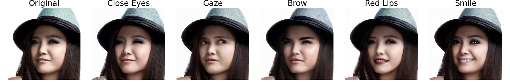
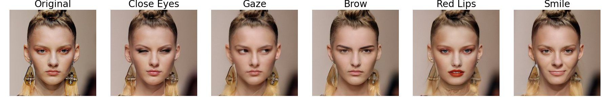

Localized Attribute Edits






Recent advances in Diffusion Models (DMs) have led to significant progress in visual synthesis and editing tasks, establishing them as a strong competitor to Generative Adversarial Networks (GANs). However, the latent space of DMs is not as well understood as that of GANs. Recent research has focused on unsupervised semantic discovery in the latent space of DMs by leveraging the bottleneck layer of the denoising network, which has been shown to exhibit properties of a semantic latent space. However, these approaches are limited to discovering global attributes. In this paper we address, the challenge of local image manipulation in DMs and introduce an unsupervised method to factorize the latent semantics learned by the denoising network of pre-trained DMs. Given an arbitrary image and defined regions of interest, we utilize the Jacobian of the denoising network to establish a relation between the regions of interest and their corresponding subspaces in the latent space. Furthermore, we disentangle the joint and individual components of these subspaces to identify latent directions that enable local image manipulation. Once discovered, these directions can be applied to different images to produce semantically consistent edits, making our method suitable for practical applications. Experimental results on various datasets demonstrate that our method can produce semantic edits that are more localized and have better fidelity compared to the state-of-the-art. Our code will be made available upon acceptance.
@inproceedings{localdiff,
title = {Diffusion Models as Data Mining Tools},
author = {Kouzelis, Theodoros and Manos, Plitsis and Mihalis A., Nikolaou and Yiannis, Panagakis},
booktitle = {BMVC},
year = {2024},
}